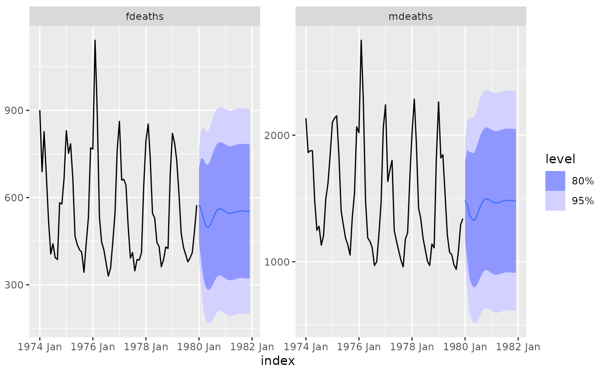

Searches through the vector of lag orders to find the best VAR model which has lowest AIC, AICc or BIC value. It is implemented using OLS per equation.
VAR(formula, ic = c("aicc", "aic", "bic"), ...)A model specification.
Exogenous regressors and common_xregs can be specified in the model
formula.
The AR special is used to specify the lag order for the auto-regression.
AR(p = 0:5)p | The order of the auto-regressive (AR) terms. If multiple values are provided, the one which minimises ic will be chosen. |
Exogenous regressors can be included in an VAR model without explicitly using the xreg() special. Common exogenous regressor specials as specified in common_xregs can also be used. These regressors are handled using stats::model.frame(), and so interactions and other functionality behaves similarly to stats::lm().
The inclusion of a constant in the model follows the similar rules to stats::lm(), where including 1 will add a constant and 0 or -1 will remove the constant. If left out, the inclusion of a constant will be determined by minimising ic.
xreg(...)... | Bare expressions for the exogenous regressors (such as log(x)) |
lung_deaths <- cbind(mdeaths, fdeaths) %>%
as_tsibble(pivot_longer = FALSE)
fit <- lung_deaths %>%
model(VAR(vars(mdeaths, fdeaths) ~ AR(3)))
report(fit)
#> Series: mdeaths, fdeaths
#> Model: VAR(3) w/ mean
#>
#> Coefficients for mdeaths:
#> lag(mdeaths,1) lag(fdeaths,1) lag(mdeaths,2) lag(fdeaths,2)
#> 0.6675 0.8074 0.3677 -1.4540
#> s.e. 0.3550 0.8347 0.3525 0.8088
#> lag(mdeaths,3) lag(fdeaths,3) constant
#> 0.2606 -1.1214 538.7817
#> s.e. 0.3424 0.8143 137.1047
#>
#> Coefficients for fdeaths:
#> lag(mdeaths,1) lag(fdeaths,1) lag(mdeaths,2) lag(fdeaths,2)
#> 0.2138 0.4563 0.0937 -0.3984
#> s.e. 0.1460 0.3434 0.1450 0.3328
#> lag(mdeaths,3) lag(fdeaths,3) constant
#> 0.0250 -0.315 202.0027
#> s.e. 0.1409 0.335 56.4065
#>
#> Residual covariance matrix:
#> mdeaths fdeaths
#> mdeaths 58985.95 22747.94
#> fdeaths 22747.94 9983.95
#>
#> log likelihood = -812.35
#> AIC = 1660.69 AICc = 1674.37 BIC = 1700.9
fit %>%
forecast() %>%
autoplot(lung_deaths)
